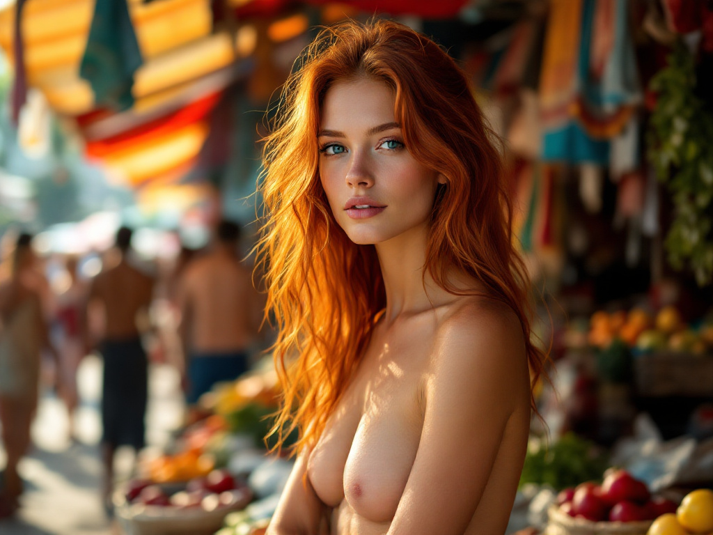

XV. Tér és tekintély – Irodai jelenlét
A test itt nemcsak jelen van, hanem kijelöl. A struktúrák, az iroda szögei és üvegfalai mögött a női alak erő és finomság határán egyensúlyoz – ő az egyensúly maga.
Nyitott ajtók mögött
Átlátszó falak mögött zajlik a világ, de ő maga a csendes hatalom középpontja.
Város felett
A fénnyel átitatott horizonton áll, mint aki nemcsak nézi, hanem formálja is a várost.
XVI. A piac színei
Ez a sorozat érzékiséget és mozgást fog össze: gyümölcsök, textilek, emberek – mind a háttérként szolgálnak ahhoz a csendes, de fókuszált jelenléthez, amely a képek középpontjában áll.

Közel a színekhez
A modell pavilonok között áll, háttérben gyümölcsök és virágok tarka világa.
Pavilonok alatt
A vásári sátor csíkjai alatt a modell jelenléte nyugalmat áraszt a nyüzsgés közepén.

Fénybe fordulva
A fény kiemeli haját, miközben a piac lüktető ritmusa csak sejtelmesen érződik.
Lüktetés és egyensúly
Színes standok és mozgás – de a tekintet fókuszában egy csendes, kiegyensúlyozott pillanat áll.